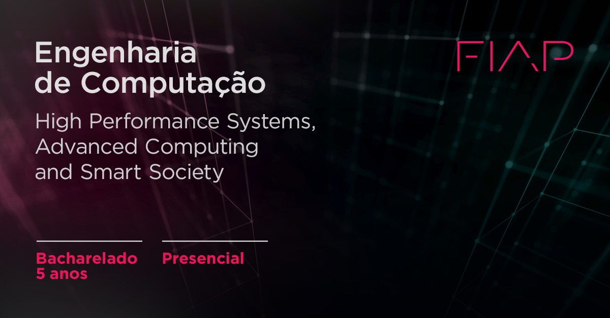

Cursos da Fiap

O ENGENHEIRO DA COMPUTAÇÃO desenvolve projetos nas áreas de sistemas operacionais, arquitetura de computadores, redes, robótica e inteligência artificial. A grade privilegia conhecimentos avançados na área de exatas (física e matemática) e aspectos de eletrônica, controle e automação, telecomunicações e TI. Você aprende sobre o ciclo de fabricação (custos, prazos, riscos, qualidade), gerenciamento de equipe, desenvolvimento de aplicativos, linguagens de programação e empreendedorismo. Na FIAP, o futuro engenheiro dispõe de um parque tecnológico avançado, laboratórios de química, informática, fabricação e o ‘Maker Labs’, um dos laboratórios mais modernos de engenharia do Brasil, com impressoras 3D, usinagem, cortadoras laser e fresadoras de precisão para criação de protótipos e peças em automação simples e com CNC (Computer Numeric Control).
O ENGENHEIRO DA COMPUTAÇÃO desenvolve projetos nas áreas de sistemas operacionais, arquitetura de computadores, redes, robótica e inteligência artificial. A grade privilegia conhecimentos avançados na área de exatas (física e matemática) e aspectos de eletrônica, controle e automação, telecomunicações e TI. Você aprende sobre o ciclo de fabricação (custos, prazos, riscos, qualidade), gerenciamento de equipe, desenvolvimento de aplicativos, linguagens de programação e empreendedorismo. Na FIAP, o futuro engenheiro dispõe de um parque tecnológico avançado, laboratórios de química, informática, fabricação e o ‘Maker Labs’, um dos laboratórios mais modernos de engenharia do Brasil, com impressoras 3D, usinagem, cortadoras laser e fresadoras de precisão para criação de protótipos e peças em automação simples e com CNC (Computer Numeric Control).